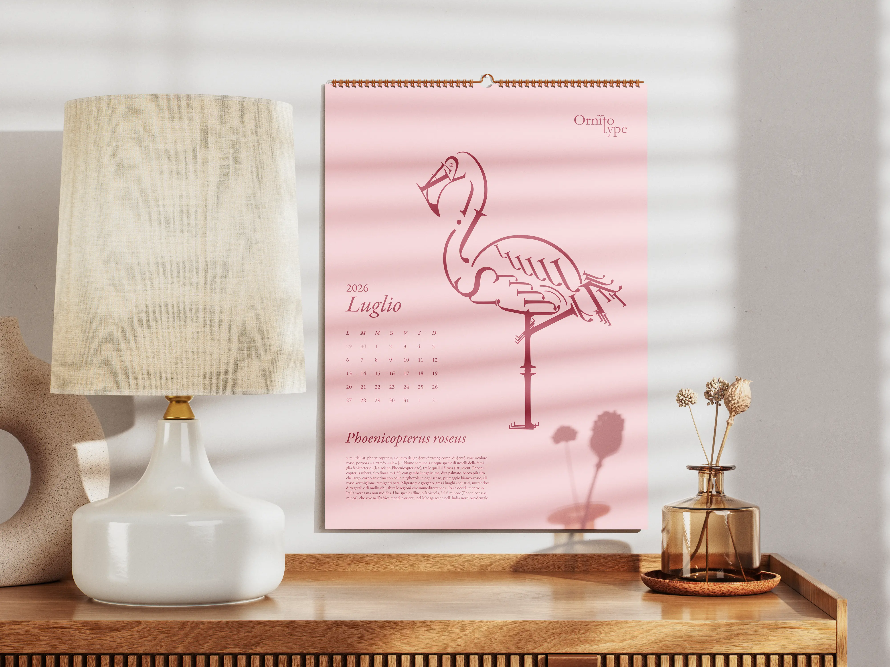
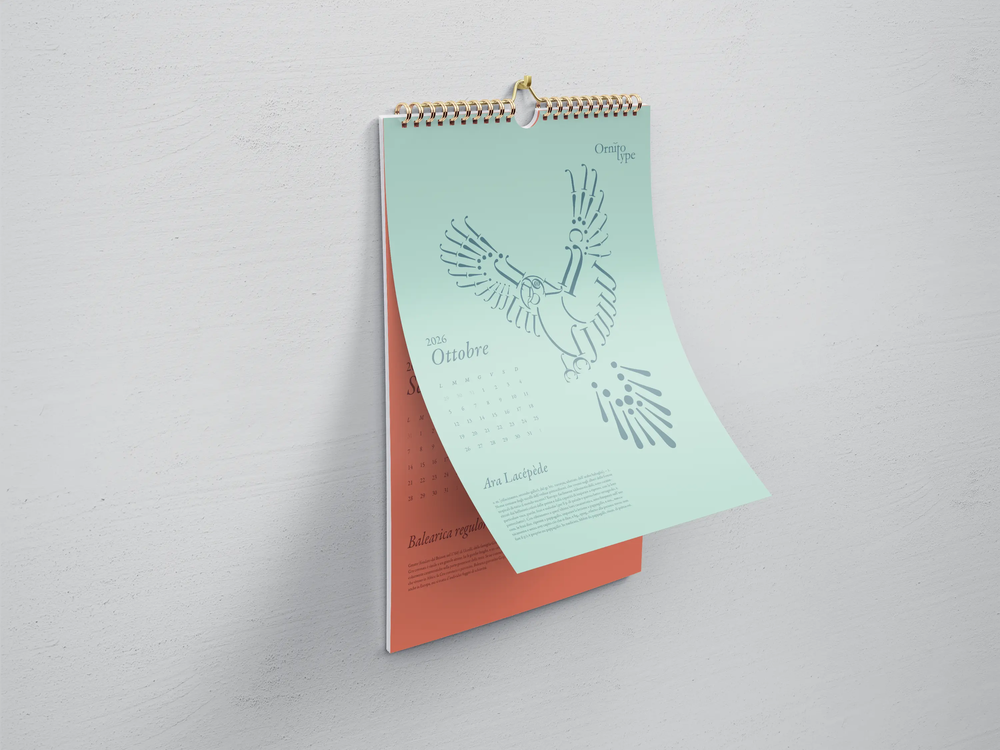
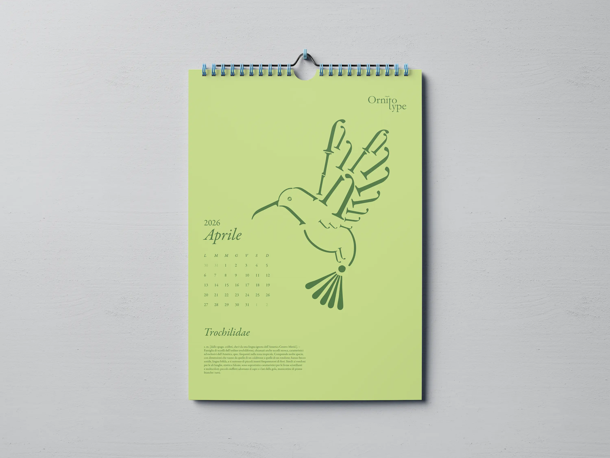
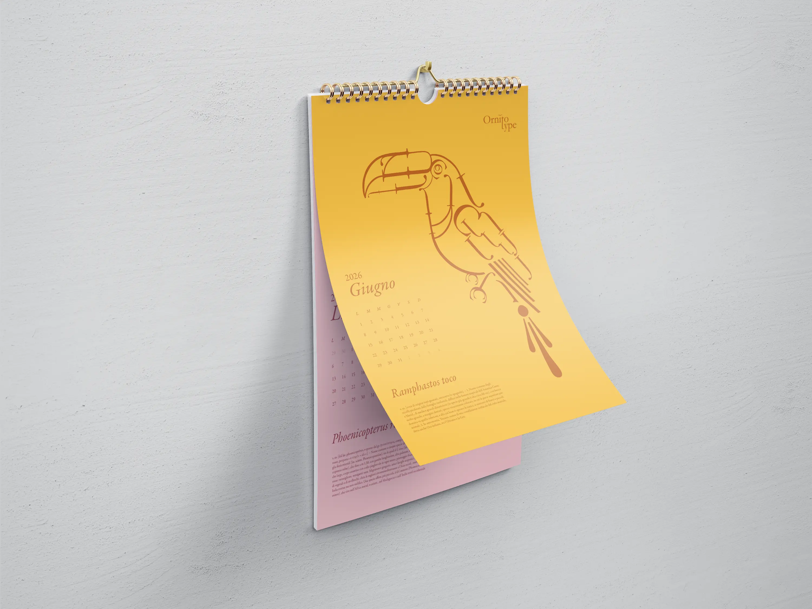

Ornitotype is an editorial project developed as part of a typographic research journey. The overarching theme of the calendar was "Flora and Fauna"; within this scope, birds were selected as the focal point due to their ability to combine morphological variety, symbolic value, and graphic potential. The title "Ornitotype" reflects this intersection, merging the words "ornithology" and "typography."




Illustration
The first phase involved the vector creation of the selected species using Adobe Illustrator. The goal was to translate the distinctive characteristics of each bird into essential, graphic forms.
Editorial composition
Subsequently, these illustrations were integrated into the editorial layout developed in Adobe InDesign. Each monthly plate is structured consistently and systematically, featuring the reference month and year, the bird illustration, the title "Ornitotype," the scientific name, and a brief description sourced from an online dictionary.
Typographic Integration
The project is built entirely on the use of Garamond Premier Pro. This typeface was chosen as the primary font not only for the textual content but also for the construction of the glyphs that form the bird illustrations. In this way, text and image share the same typographic DNA, strengthening the coherence and unity of the visual system.